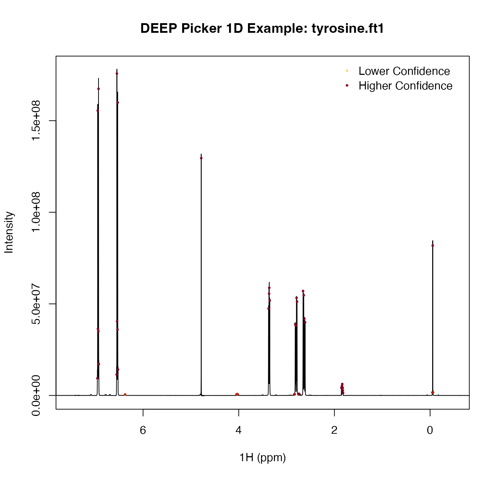
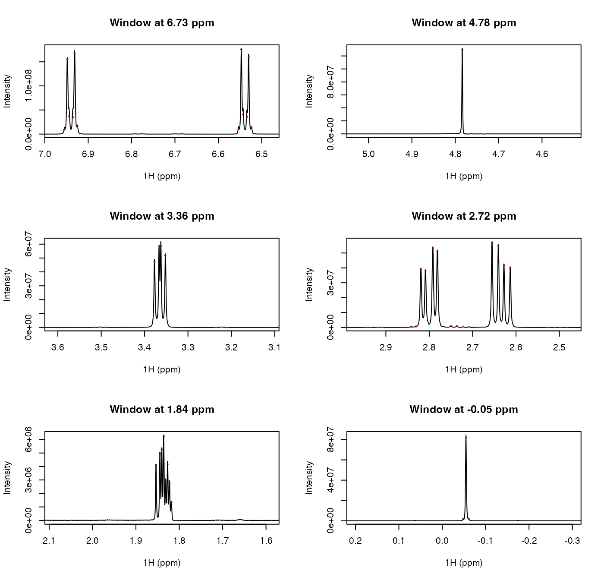

DEEP Picker uses artificial neural networks for NMR peak picking and deconvolution. This wrapper exposes the 1D DEEP Picker engine for spectra that are already available in R memory.
Usage
deep_picker_1d(
spectrum,
ppm = NULL,
noise = NULL,
scale = 5.5,
scale2 = 3,
model = 2L,
auto_ppp = TRUE,
interp_step = 1,
negative = FALSE,
verbose = TRUE
)Arguments
- spectrum
Numeric vector containing the 1D spectrum intensities.
- ppm
Optional ppm information. Supply either a numeric vector of length 3, `c(begin, step, stop)`, or a numeric vector the same length as `spectrum`. If `NULL`, `deep_picker_1d()` derives ppm values from `names(spectrum)`.
- noise
Spectrum noise level. If `NULL`, `deep_picker_1d()` estimates noise internally using the same default variance-based procedure as the command-line program.
- scale
Minimal peak amplitude cutoff, expressed as a multiple of the noise level. The default is `5.5`.
- scale2
Signal-region cutoff, expressed as a multiple of the noise level. The default is `3.0`.
- model
ANN model selection. `1L` corresponds to the broader PPP range; `2L` corresponds to the narrower PPP range used by the 1D command-line tool by default.
- auto_ppp
Logical; whether to adjust PPP automatically using cubic spline interpolation.
- interp_step
Numeric interpolation step. `1` means no interpolation. Values other than `1` suppress automatic PPP adjustment.
- negative
Logical; whether to pick negative peaks in addition to positive peaks.
- verbose
Logical; whether to print DEEP Picker progress messages.
Value
A data frame with one row per picked peak and the following columns:
- `x`
Peak coordinate in DEEP Picker point units.
- `ppm`
Peak position in ppm.
- `height`
Estimated peak height.
- `sigmax`
Estimated Gaussian width component.
- `gammax`
Estimated Lorentzian width component.
- `volume`
Estimated integrated peak volume.
- `confidence`
Peak confidence score on a 0 to 1 scale.
Details
The `model` argument follows the DEEP Picker guidance: use `1L` for broader peaks and `2L` for narrower peaks. When `auto_ppp = TRUE`, DEEP Picker adjusts PPP automatically using cubic spline interpolation. As in the command-line program, automatic PPP adjustment is disabled when `interp_step` is not `1`.
References
Li, D.-W., Hansen, A. L., Yuan, C., Bruschweiler-Li, L., and Bruschweiler, R. (2021). DEEP Picker is a Deep Neural Network for Accurate Deconvolution of Complex Two-Dimensional NMR Spectra. Nature Communications, 12, 5229. DOI: 10.1038/s41467-021-25496-5.
Examples
path <- system.file("extdata", "tyrosine.ft1", package = "deeppicker")
spectrum <- read_spectrum_1d(path)
#> Read nmrPipe 1D imaginary part failed.
#> Spectrum size is 32768
#> From 11.2666 to -1.72416 and step is -0.000396457
peaks <- deep_picker_1d(spectrum, scale = 100)
#> Noise level is estiamted to be 5228.25, using a geneal purpose method.
#> Estimated FWHH is 7.69275 pixel
#> Interpolation step is 1.28212 pixel
#> After cubic spline interpolation, Estimated FWHH is 6.13801 pixel. spectrum size is 25558 and step1 is -0.000508308 ppm
#> Total interpolation step is 1.28212 pixel
#> Estimated FWHH is 6.13801 pixel
#> Interpolation step is 1.023 pixel
#> After cubic spline interpolation, Estimated FWHH is 6.26739 pixel. spectrum size is 24983 and step1 is -0.00052 ppm
#> Total interpolation step is 1.31162 pixel
ppm <- as.numeric(names(spectrum))
plot(ppm, spectrum, type = "l", xlim = c(7.5, -0.5),
xlab = "1H (ppm)", ylab = "Intensity",
main = "DEEP Picker 1D Example: tyrosine.ft1")
cols <- grDevices::hcl.colors(100, "YlOrRd", rev = TRUE)
conf_idx <- pmax(1L, ceiling(peaks$confidence * 99))
points(peaks$ppm, peaks$height, pch = 16, cex = 0.5, col = cols[conf_idx])
legend("topright",
legend = c("Lower Confidence", "Higher Confidence"),
pch = 16, pt.cex = 0.5, col = cols[c(25, 95)], bty = "n")

centers <- c(6.73, 4.78, 3.36, 2.72, 1.84, -0.05)
half_width <- 0.25
old_par <- par(mfrow = c(3, 2))
for (center in centers) {
xlim <- c(center + half_width, center - half_width)
in_window <- ppm >= min(xlim) & ppm <= max(xlim)
ylim <- range(spectrum[in_window], finite = TRUE)
plot(ppm, spectrum, type = "l", xlim = xlim, ylim = ylim,
xlab = "1H (ppm)", ylab = "Intensity",
main = sprintf("Window at %.2f ppm", center))
points(peaks$ppm, peaks$height, pch = 16, cex = 0.5, col = cols[conf_idx])
}

par(old_par)